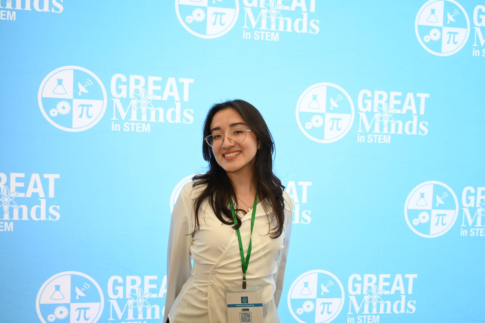
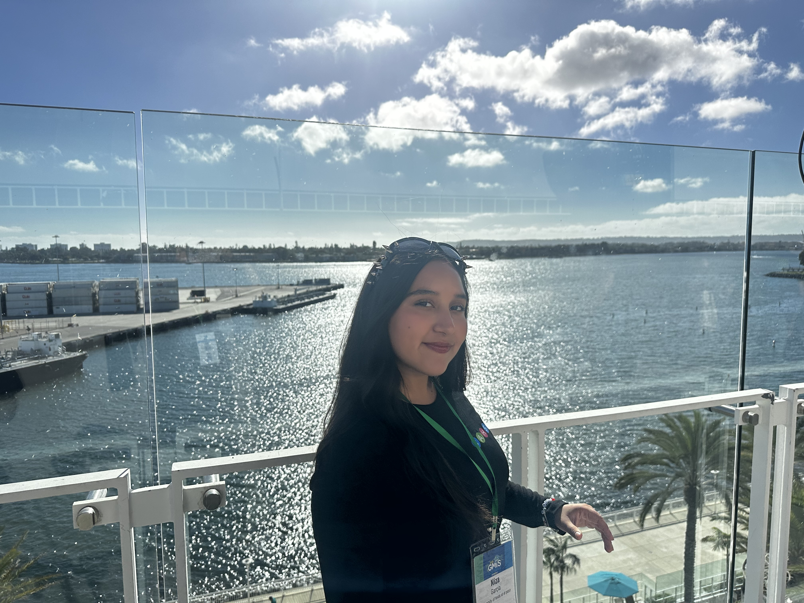
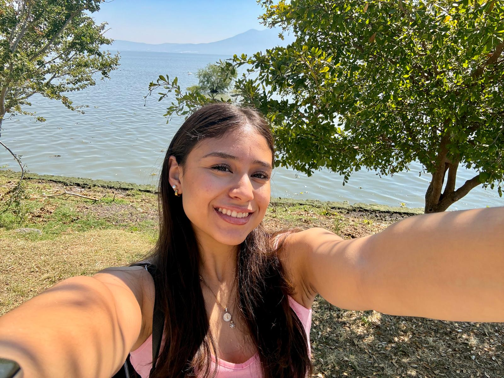
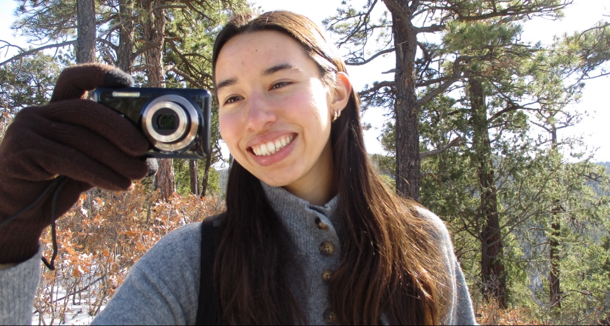
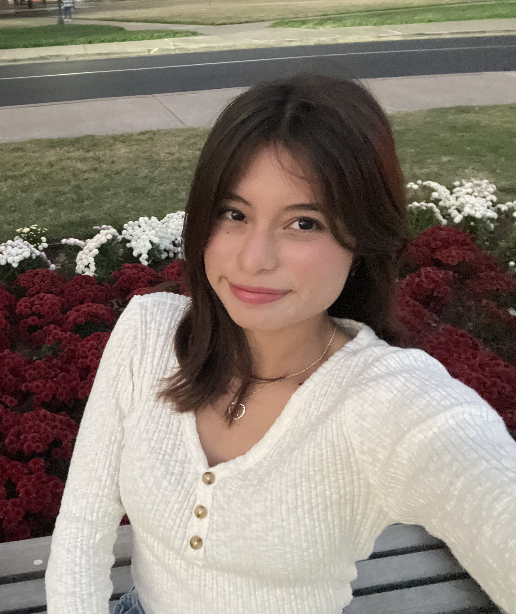
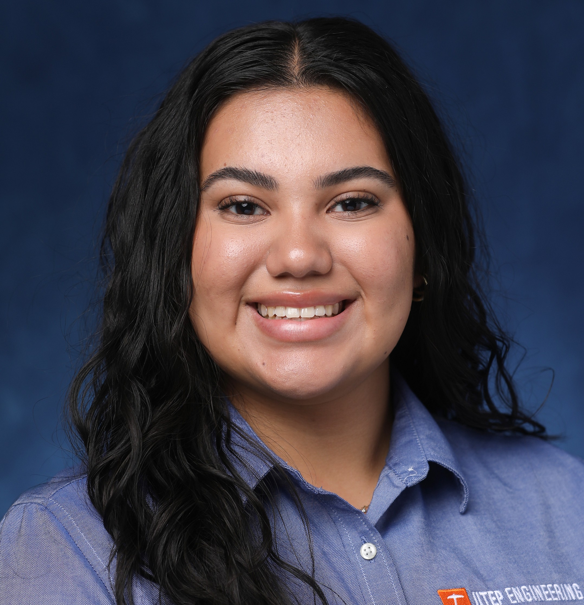
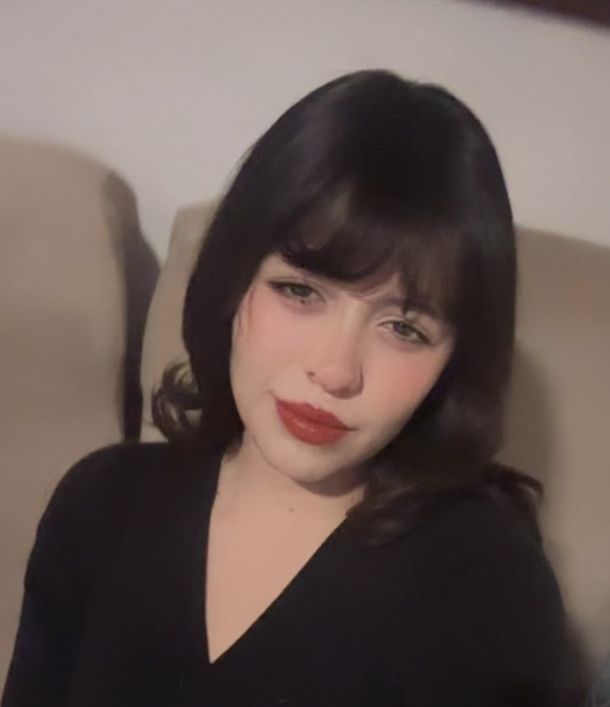
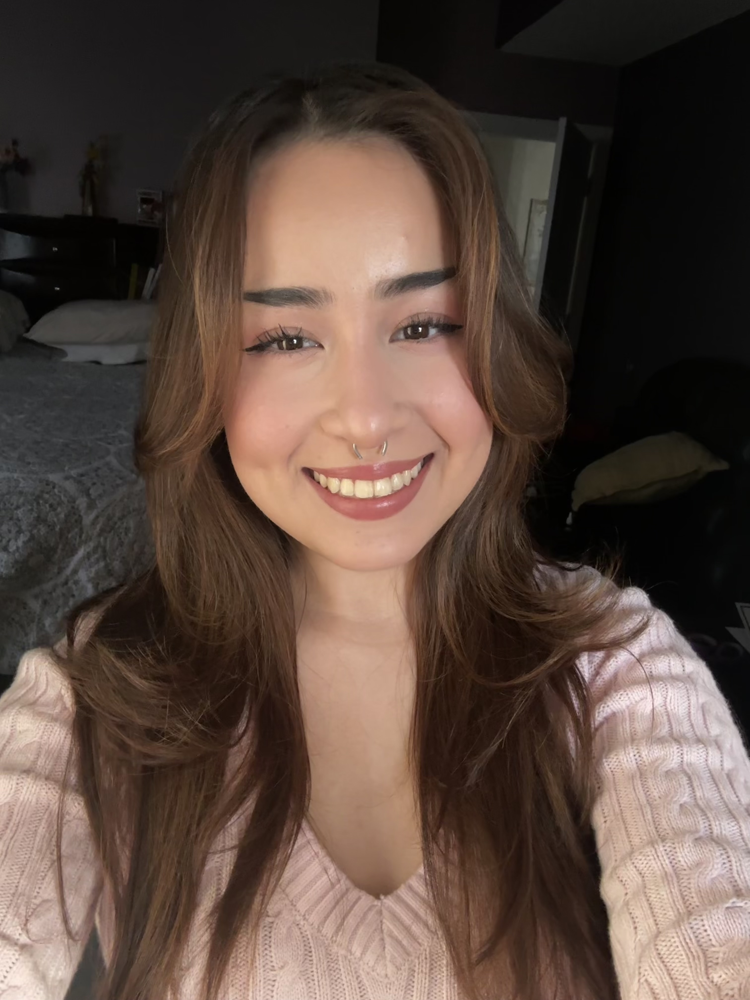

Daniela
President
Daniela
Joined Girls Who Code in 2023 to support women in tech and help close the gender gap in Computer Science. She has a love-hate relationship with Operating Systems. Outside of school, she’s probably listening to Conan Gray or reading Omniscient Reader’s Viewpoint.

Fernanda
Vice President
Fernanda
A non-traditional student passionate about AI, neuroscience, and software engineering, with dreams of becoming a Machine Learning Engineer. She values representation in STEM and, outside of tech, enjoys exploring, walking, and Cinepolis Takis Fuego popcorn.

Aleida
Vice President
Aleida
Joined Girls Who Code to find a community of supportive women who inspire and push each other to succeed. She enjoys crocheting, playing guitar, discovering new music, and was part of a mariachi for four years.
Vianey
Member Outreach Coordinator
Vianey
Joined Girls Who Code to find mentorship and a supportive community of women in tech. She is passionate about front-end development because of the creativity and loves exploring artificial intelligence. Outside of school, you'll find her playing volleyball, hiking or eating Takis.

Sabina
Community Outreach Coordinator
Sabina
Interested in front-end development, data science, UI/UX, and loves object-oriented programming, believing that strong communities build strong candidates. A certified cat lady, she also enjoys superheroes, The Last of Us, coffee shops, and movie nights.

Niza
Event Coordinator
Niza
Continuing the mission, she joined Girls Who Code to make it a place where women and non-binary people can thrive in engineering. She hopes to foster unity and uplift Latinx voices in tech. Outside of school, she's probably beating someone in pool, behind a camera, or reading the dictionary for fun.
Monet
Secretary
Monet
First-gen Computer Science and Mathematics student interested in AI development, HPC, and quantum computing.Outside of academics, she enjoys early morning runs, traveling, and time with family. You’ll usually find her with a book in hand or listening to music, especially Junior H.

Naomi
Historian
Naomi
Joined Girls Who Code to grow her Computer Science skills while learning alongside a supportive community. She is passionate about software development and discovering new technologies. Outside of school, she's probably swimming, at the gym or eating spicy chips.

Ana Paula
Social Media Manager
Ana Paula
Originally a civil engineering student, she joined Girls Who Code to expand her knowledge in tech, joining a supportive community and making friends along the way. Taekwondo for 15 years and a violin player, she also loves running and spending her free time visiting coffee shops to try new drinks.

Pamela
Social Media Manager
Pamela
Loves coding, problem-solving, and using her skills to empower women and girls in STEM, blending her background in design and marketing. Outside of tech, she enjoys music, travel, fitness, and embracing the belief that you can do anything you set your mind to.

Johanna
Project Manager
Johanna
Joined Girls Who Code to grow her skills, collaborate with women in tech, and explore creative applications of computer science, with interests in web development, AI, and problem solving. She enjoys basketball, traveling, spending time with loved ones, and discovering new foods and cultures.

Anel
Technical Officer
Anel
Joined Girls Who Code to be part of a supportive community of women in STEM. As an Electrical Engineering student, she enjoys bringing a different perspective and sharing her knowledge to inspire others across fields. Outside of school, you’ll find her at the gym, playing piano, or gardening.

Cosette
Technical Officer
Cosette
Joined Girls Who Code to be part of a community of women who love Computer Science. She’s passionate about cybersecurity and is always eager to keep learning. Outside of school, you’ll usually find her watching Formula 1, playing volleyball, or reading.

Caelyn
Webmaster
Caelyn
Joined Girls Who Code to create new connections and learn from inspiring women in tech. She is passionate about ethical AI and its potential to revolutionize industries. Outside of school, she's likely collecting yet another hobby, watching Adventure Time, or at the thrift store.

Evelyn
Webmaster
Evelyn
Joined Girls Who Code to grow her leadership and programming skills while connecting with inspiring people. She is passionate about combining tech with social impact and created BADAM, a web app focused on animal welfare. Outside of school, she's probably reading Man's Search for Meaning or with her pet, Atenea

Daniela
Treasurer
Daniela
Joined Girls Who Code to learn more about Computer Science topics and make connections along the way. Outside of school, she's probably at the gym or playing video games.